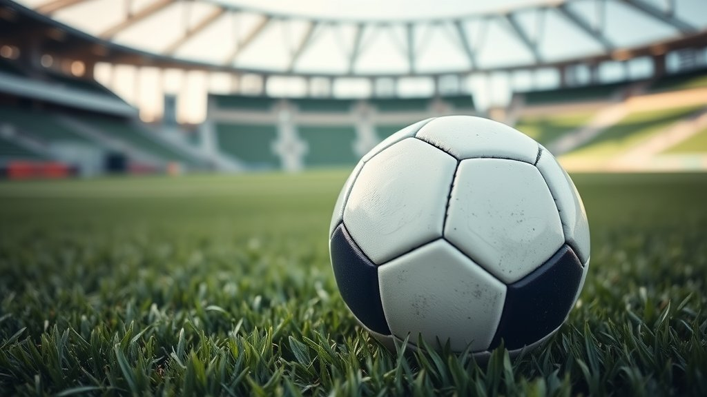
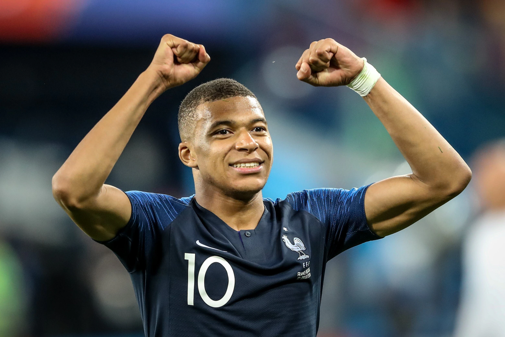
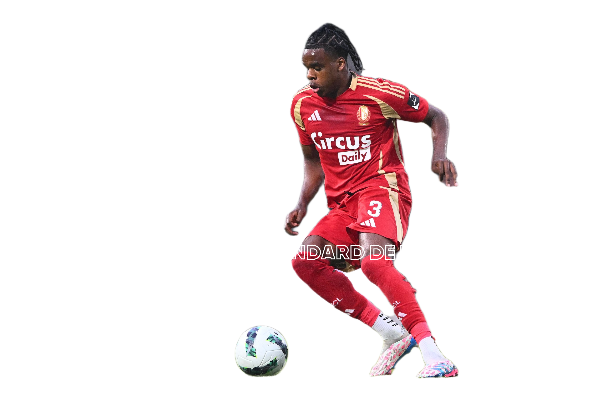

Voetbal is de populairste sport ter wereld en verbindt miljoenen mensen van alle leeftijden en culturen. Het spel draait om teamwork, techniek en snelheid waarbij spelers samenwerken om doelpunten te maken en hun tegenstander te verslaan. Voetbal is niet alleen competitief, maar ook gezond: het verbetert conditie, kracht en concentratie. Of je nu zelf op het veld staat of supportert langs de zijlijn, voetbal zorgt voor spanning, passie en onvergetelijke momenten.


Standard de Liège:
Vaak aangeduid als Standard of Standard Luik is een van de bekendste en meest succesvolle voetbalclubs in België, gevestigd in Luik. Het staat bekend als een van de "Grote Drie" (samen met Anderlecht en Club Brugge), al is die status de laatste jaren door sportieve en financiële moeilijkheden veranderd.
